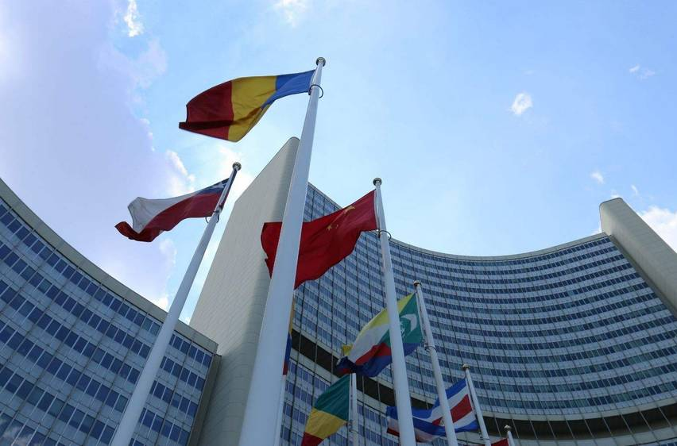
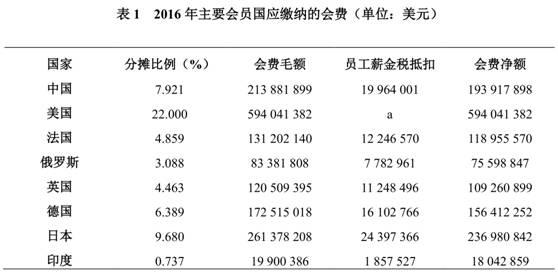

收录于合集
联合国与新型国际关系的构建
内容摘要
新型国际关系是中国在新形势下提出的处理国际关系尤其是大国关系的新理念、新思路和新方法，也是中国对改革和完善现有国际秩序的重要理论贡献。建构新型国际关系是国际社会的共同任务，联合国也应该在其中发挥积极作用。一方面，《联合国宪章》精神与新型国际关系理念相契合；另一方面，广泛代表性与动员能力以及完备的合作机构和机制，也使联合国在构建新型国际关系中具有天然的优势。现实的条件和资源使联合国在构建新型国际关系中能够扮演参与者、引领者、共识凝聚者与监督者的角色。因此，中国与联合国应该通过重塑联合国权威、保持联合国的协调中心地位、稳步推进联合国改革、提升联合国的全球治理能力等途径来推动联合国参与构建新型国际关系。基于此，中国的联合国外交也应该有所作为，在尊重联合国地位的基础上，利用联合国的优势和平台，与联合国合作共建新型国际关系。这将是未来中国联合国外交的重要内容。
关键词 新型国际关系 联合国 中国 联合国外交
作者简介
石晨霞，上海国际问题研究院助理研究员

新型国际关系是中国在新形势下提出的处理国际关系尤其是大国关系的新理念、新思路和新方法，也是中国对改革和完善现有国际秩序的重要理论贡献。可以说，新型国际关系是中国在国际体系转型期为国际社会提供的中国智慧和中国方案。但是如何将这种理念推向国际社会并使其国际化，联合国无疑具有天然的优势，也能够扮演主权国家无法扮演的角色。因此中国要充分调动联合国的积极性，发挥其自身优势，并通过各种途径促使其在构建新型国际关系中发挥积极作用。与此同时，中国的联合国外交要配合这一进程，在尊重联合国地位的基础上，深化双方合作，共建新型国际关系。本文试图对这些问题进行探讨。
** 1** 新型国际关系理念的提出及其理论内涵
新型国际关系以共同利益为基础，以平等包容为指导原则，以合作共赢为核心，以打造命运共同体为最高目标。新型国际关系建设已经成为中国外交的重要组成部分。新型国际关系理念也将在未来较长时期内指导中国外交事业的发展。
（一）新型国际关系理念的提出
冷战结束以来，随着国际局势的深刻调整与变化，国际权势的转移，以及中国的崛起，国际社会围绕如何处理好崛起大国与守成大国关系的讨论越来越多。有的观点认为，中国作为一个正在崛起的国家必将挑战美国在当前国际体系中的地位，两国不可避免地会陷入所谓的“修昔底德陷阱”。但是，作为当事方的中国，则始终强调中国的崛起不会挑战美国的地位，中国将始终奉行和平共处、合作共赢的外交政策，也积极探索跳出传统大国关系窠臼的路径，建立新型的大国关系。
关于新型大国关系的提法，时任国家主席江泽民在20世纪90年代就提出，发展以“不结盟、不对抗、不针对第三方”为特征的新型大国关系。2010年，在中美第二轮战略与经济对话会上，时任国务委员戴秉国也提出中美应该建立新型大国关系。2012年，时任国家副主席习近平访问美国，也对新型大国关系理念进行了阐述。党的十八大以后，习近平主席多次强调建立中美新型大国关系。2013年6月，习近平主席在与奥巴马总统的“庄园会晤”中，正式提出“不冲突、不对抗，相互尊重，合作共赢”是中美新型大国关系的基本内涵；2014年11月，中美两国领导人在出席亚太经济合作组织领导人峰会之后，举行了一场“瀛台夜话”，双方一致同意继续推进建立中美新型大国关系，中方具体提出了六个重点推进方向；2015年9月，习近平主席访问美国，再次对建立中美新型大国关系发表观点，指出“构建中美新型大国关系这一目标是完全正确的，具有强大生命力。双方应该坚定沿着这个方向，一步一个脚印走下去”。随着新型大国关系理念的发展，并在中美两国外交实践中取得一定进展之后，新型大国关系理念逐步突破中美关系范围，向中俄关系、中印关系扩展。这一方面是中国试图将新型大国关系理念应用于更广泛的双边关系范围，另一方面是单纯的中美新型大国关系也曾遭到俄罗斯、印度等国家的一些质疑，基于上述原因，新型大国关系的适用范围得到了扩展，其概念内涵也得到了充实。
但是中国外交的创新不止于中美关系，也不止于大国关系，而是基于此而发展起来的思考整体国际关系的新理念与新思路，即新型国际关系。新型大国关系的提出为新型国际关系理念的诞生奠定了基础，而且新型国际关系包含新型大国关系。2013年3月，习近平主席在访问俄罗斯时指出，“面对国际形势的深刻变化和世界各国同舟共济的客观要求，各国应该共同推动建立以合作共赢为核心的新型国际关系，各国人民应该一起来维护世界和平、促进共同发展”，这是中国首次提出构建新型国际关系。2015年9月，习近平主席在美国出席联合国70周年系列峰会期间指出，“我们要继承和弘扬《联合国宪章》的宗旨和原则，构建以合作共赢为核心的新型国际关系，打造人类命运共同体”，并全面系统阐述了构建新型国际关系，打造人类命运共同体所要作出的努力。2016年6月，习近平主席在出席第八轮中美战略与经济对话和第七轮中美人文交流高层磋商联合开幕式时，发表了以《为构建中美新型大国关系而不懈努力》为题的重要讲话，重申：“中国坚定不移走和平发展道路，倡导各国共同走和平发展道路，推动构建以合作共赢为核心的新型国际关系，打造人类命运共同体。”由此，新型国际关系成为中国外交的重要组成部分，也将在未来较长时间内指导中国外交的发展。
此外，随着美国总统唐纳德·特朗普的上任，中美新型大国关系的推进可能会面临一些挑战，因为从目前习近平主席与特朗普的两次通话来看，双方均未提及中美新型大国关系，而更多强调中美合作关系。在此背景下，新型国际关系将获得更大的发展空间，甚至逐渐摆脱原有的对新型大国关系的过度依赖，实现独立发展并获得更多关注，并成为一个系统的中国外交理论。与此相对应，构建新型国际关系的重点也将从单纯依靠大国关系，转向其他方面，包括发展中国家、国际组织等，这为联合国参与构建新型国际关系提供了机遇。
（二）新型国际关系的理论内涵
新型国际关系作为中国外交的理论创新成果，它是由目标、核心、基本原则、基础等要素构成，并相互配合形成一套完整的理论。
新型国际关系以打造命运共同体为最高目标。习近平主席2015年在联合国的讲话以及2016年在中美战略与经济对话和第七轮中美人文交流开幕上的讲话，都谈到要“构建以合作共赢为核心的新型国际关系，打造命运共同体”。可见，构建新型国际关系的目标是打造命运共同体，而命运共同体的基础是建立新型国际关系。从新型国际关系与命运共同体所涉及的主体来看，前者主要指传统国际关系领域的主权国家、国际组织、其他国际关系行为体等，后者的主体则是全人类。换言之，构建新型国际关系是在处理好国家间、国家与国际组织和其他主体关系的前提下，从根本上推进全人类的利益与福祉。
新型国际关系以合作共赢为核心。合作是路径，共赢是目标，通过合作来实现共赢。合作在当前的时代背景下不仅是国家间的常态化相处方式，也是全人类在面对林林总总的全球性问题时唯一可选择的行为方式。新型国际关系强调合作的必要性和必然性，既是对合作本身的深刻理解，也是对当前国际形势的准确判断。共赢是对传统国际关系中独占思维的摒弃与超越，同时，共赢也突出利益的共享性，强调互惠互利。这本质上是针对传统国际关系中“你赢即我输”的零和思维而言的，强调国家间关系的非对抗性和互利性。合作与共赢相辅相成、浑然一体。中国外交部长王毅说：“新型国际关系到底新在哪里？如果要用一句话来概括，那就是：以合作取代对抗，以共赢取代独占，不再搞零和博弈和赢者通吃那一套。”
新型国际关系以平等、包容为指导原则。新型国际关系理念还内涵着对平等、包容价值的追求，同时将这种价值外化为实践过程中的指导原则，这从根本上保障了新型国际关系的“新”，即真正的合作共赢。因为只有平等、包容，才能真正实现合作共赢，而不平等的合作关系，则很难真正实现利益共享。从这一点来讲，新型国际关系与中国外交长期以来坚持推动国际关系民主化和建立更加公正合理的国际新秩序有着内在的联系。
新型国际关系以共同利益为基础。新型国际关系的建立离不开总体目标的指引，也离不开基本原则的指导，更离不开各行为体共同利益的凝聚。共同利益是合作的前提，也是实现共赢的条件。因此，构建新型国际关系首要的问题是寻找各方利益的共同点，并在此基础上推动共同利益的实现与增进。
新型国际关系是中国在当前国际背景下提出的重要外交思想，它是中国特色外交理论与实践创新的成果，它将在未来较长时间内指导中国外交的发展，也将为国际社会处理国家间关系提供新的思路和视角，因此，可以说构建新型国际关系思想是中国对国际社会和平发展贡献的中国智慧和中国方案。但是，中国的智慧和方案首先需要推向国际社会，并使其国际化，在此基础上与国际社会共同构建新型国际关系。在这个问题上，联合国能够在中国与国际社会之间架起一座桥梁，而且联合国具有天然的优势，并且能够扮演主权国家无法扮演的角色，因此中国需要借助联合国的平台和机制来推广和践行新型国际关系理念。
** 2** 题联合国在构建新型国际关系中的优势与角色
随着中国推动构建新型国际关系的重点发生转变，联合国应当成为构建新型国际关系的重点合作对象。因为推动构建新型国际关系不仅是中国的目标，也符合联合国的利益。联合国作为规模最大、最广泛的国际合作平台，应该在推动构建新型国际关系中发挥积极作用。而且联合国本身在构建新型国际关系中既有优势，也有资源。此外，联合国总体上对构建新型国际关系的态度是积极的，但也需要中国进一步强化联合国对新型国际关系理念的认同。
（一） 联合国在构建新型国际关系方面具有天然的优势
第一，以合作共赢为核心的新型国际关系理念与《联合国宪章》精神相契合。首先，《联合国宪章》宗旨第三条强调“促成国际合作，以解决国际间属于经济、社会、文化及人类福利性质之国际问题，且不分种族、性别、语言或宗教，增进并激励对于全体人类之人权及基本自由之尊重。”这一点的核心是以合作方式解决各类国际问题并增进人类福祉，而新型国际关系理念的目标是打造人类命运共同体，这完全符合《联合国宪章》的宗旨和原则。其次，《联合国宪章》强调通过合作来应对各类国际问题，从而实现国际和平与发展，新型国际关系的核心也强调以合作为手段，实现共赢。再次，《联合国宪章》强调大小国家一律平等参与国际事务，其核心是尊重主权国家权利，形式是以平等身份参与。这一点与新型国际关系所遵循的平等、包容的原则相契合。新型大国关系向新型国际关系的转变，不只是概念上的简单变化，而是基本内涵的变化。新型国际关系的适用范围是整个国际社会，包括大国、小国、国际组织、各类非国家行为体等。这些行为主体如何通过合作来实现共赢，前提是能够平等参与合作，不同国家尤其是小国能够得到应有的尊重。因此，平等是新型国际关系内涵的基本价值，这与《联合国宪章》精神不谋而合。由此可见，联合国在推动构建新型国际关系方面具有天然的优势，这是其他国际组织或机制所不具备的。
第二，从新型国际关系的合法性角度看，联合国拥有最广泛的成员，也是最有动员能力和影响力的政府间国际组织，对于构建新型国际关系具有独特优势。尽管联合国目前的很多机制和活动遭到诟病，但毫无疑问它仍然是国际社会最具广泛性、权威性和合法性的国际组织，其广泛的代表性使其具备独一无二的动员能力。通过联合国的平台来宣介新型国际关系理念并在实践中构建新型国际关系，可以实现事半功倍的效果。例如，2015年9月，习近平主席在出席联大系列峰会期间，正式提出了构建新型国际关系的主张，并阐明了具体的努力方向，从而使新型国际关系理念迅速成为国际社会讨论的热点问题。另外，联合国是国际合作的最大平台，在相互依赖的世界中，各类全球性问题都主要在联合国的平台或框架下加以应对，在此过程中，国际社会的交流频率和互动深度都是其他机制所无法达到的，这样的优势对于实践新型国际关系显然是有利的。而且联合国框架下的合作也致力于促进人类的共同发展，这与新型国际关系的目标也是一致的。因此，联合国应该成为构建新型国际关系的重要平台和推动力量。
第三，联合国拥有涉及各个领域、各个方面最完备的合作机构和机制，这些均为新型国际关系的实践创造了现实条件。联合国在安全、发展、人权领域的各类机构、机制、论坛等构成了其独特的资源，这些机构、机制在推动相关领域的国际合作与全球治理中都是不可或缺的。借助联合国的这些机构来实践新型国际关系理念，既可以在各领域全面推开，也有利于使理念转变为实践。目前，中国加入了联合国系统的多数机构或机制，可谓全面参与，也逐渐通过自身的实力来影响相关领域的合作进程。例如，中国在推动全球气候变化治理过程中，从最初的被动参与者转变为积极的引领者，2015年成功推动联合国气候变化治理从“京都时代”跨入“巴黎时代”，开启了气候变化治理的新征程。另外，联合国的各类机构形成了庞大的系统网络，而且这个系统网络也通过各种途径传播和扩散联合国的思想和理念，同时扎实推进联合国在维护世界和平、促进共同发展、增进人权、合作应对各类全球性问题等领域的事业。基于此，通过联合国机构来实践新型国际关系能够形成系统扩散效应，加速新理念和新做法的传播速度和效率，这无疑有利于将新理念变为实践。
总体而言，联合国有其自身的优势和特点，如何在推动构建新型国际关系中发挥其优势既是联合国发展需要解决的问题，也是中国联合国外交活动的着力点和关键点。当然，联合国也存在很多问题，例如，联合国机构的庞杂，效率低下，机构之间的协调与合作不够；联合国改革停滞不前；各治理领域的经费短缺；等等。这些问题都长期困扰着联合国。因此在推动构建新型国际关系的过程中，联合国应突出优势，并弥补不足。
从互动的角度来看，联合国的天然优势显然有利于构建新型国际关系，同时，新型国际关系的构建也将助益联合国的发展，尤其是在联合国目前处于地位相对边缘化的背景下，参与构建新型国际关系将为联合国提供重塑自身形象的机遇。具体来看，参与构建新型国际关系，一是有利于真正贯彻落实联合国的理念。如上文所述，《联合国宪章》所倡导的基本理念与新型国际关系理念相契合，新型国际关系的建立无疑将使联合国所倡导的理念和价值得以推广和践行。二是有利于联合国获得广大发展中国家的支持。新型国际关系强调在平等、包容的原则指导下建立以合作共赢为特点的国家间关系，这是多数发展中国家所希望看到的，也是它们长期以来所追求的新的国际体系，因此，通过联合国的平台推动建立新型国际关系能够为联合国赢得发展中国家的认可。三是有利于提升联合国地位，重塑联合国形象。时代的快速发展要求每一个国际行为体都要及时作出反应，跟上时代的步伐。而联合国更应该在当前国际体系转型中处于引领地位，不至于因为落后于时代要求而被边缘化，构建新型国际关系为联合国提供了这样的机遇，它将在此过程中开辟新的发展空间。
（二） 联合国在构建新型国际关系中的角色
联合国在构建新型国际关系中的角色主要体现在以下几个方面：第一，联合国是构建新型国际关系的参与者。联合国不是孤立于新型国际关系之外，也不是凌驾于新型国际关系之上，而是参与构建新型国际关系的一员。这是它的首要角色。作为一个参与者，联合国有其自身的利益和追求，包括提升联合国地位，保持它的权威，能够完成《联合国宪章》宗旨赋予它的使命，促使其理念和价值得以推广与实践，等等。而参与构建新型国际关系总体上符合联合国的利益和价值追求，有利于联合国实现维护国际安全的目标，这也决定了联合国对中国提出的构建新型国际关系的态度。时任联合国秘书长潘基文在谈到联合国与中国的合作时提到，“在建设一个和平、人文与友好的世界的过程中，我们将遇到一系列问题，而中国将一直是联合国不可替代的伙伴”。共同参与构建新型国际关系符合中国与联合国的利益，也将为国际社会的合作注入新的动力。
第二，联合国是构建新型国际关系的引领者。联合国的参与者角色界定了其在国际合作中的第一重和基本身份，而作为引领者则决定了联合国在构建新型国际关系中的特殊性和优势地位。引领者主要强调理念和价值的引领，进而成为行动的引领者。这既是联合国的优势和特殊性使然，也是联合国的责任与义务的要求。具体来讲，作为一个政府间国际组织，联合国的影响力来自于其在价值理念上的创新能力和引导能力方面，加之其广泛的代表性和合法性，使其在众多行为体中能够脱颖而出成为引领者。另外，从责任与义务的角度看，引领者的角色要求联合国具有创新意识和创新能力，始终走在时代的前沿，掌握时代变化的脉搏，如此才能完成引领者的使命。具体到新型国际关系，由于其尚处于初创阶段，理论内涵和具体实践均有待进一步充实与完善，因此联合国的引领作用将推动新型国际关系的进一步发展与完善。
第三，联合国是构建新型国际关系的共识凝聚者。联合国历来都是解决国际问题、回应国际关切、促进国际合作的主要平台。2015年达成的《联合国2030年可持续发展议程》以及全球气候变化《巴黎协定》都是在联合国框架下达成的覆盖国际社会多数国家的国际合作成果。这些成果的达成实属不易，需要在众多主权国家、国际集团以及非国家行为体之间消弭分歧，形成共识，而联合国不仅为上述主体沟通交流提供了最广泛的平台，也在减少分歧，凝聚共识方面扮演了独一无二的角色。因此，联合国在构建新型国际关系的过程中，也能够扮演共识凝聚者的角色。
第四，联合国是构建新型国际关系的监督者。新型国际关系的构建非一日之功，必将是一个长期的过程，其间也将面临错综复杂的国家间关系和犬牙交错的利益平衡，因此必然需要一个在价值上相对主权国家而言秉持中立的实体来进行监督与评估整个发展进程，联合国具备这样的特点，而且它拥有强大的专业性机构和数量众多的咨询服务系统，能够承担起这一角色。此外，联合国的监督者角色强调它的利益的特殊性，与主权国家相比，联合国的利益从根本上是服务于整个国际社会的和平与发展，具有公共性的特点，因此不易与主权国家和其他利益集团产生根本性的利益冲突，因此基本上能保障监督者和评估者的公允和公正。
尽管联合国在新型国际关系构建中的角色不止于此，但是目前最主要和最核心的是上述的参与者、引领者、共识凝聚者与监督者。随着新型国际关系的持续推进，国际社会还将面临新的问题和新的挑战，相应对联合国的要求也会更高，因此联合国的角色也会随着现实需要的变化而有所变化，也会在不同的具体问题和领域上扮演不同的角色。
** 3** 联合国在构建新型国际关系中的作用与路径
尽管新型国际关系主要是处理国家之间的关系，但是随着全球化的发展以及非国家行为体的崛起，包括联合国在内的许多国际组织也是国际关系不可或缺的行为体，因此，构建新型国际关系必然离不开这些国际组织的积极参与和配合，而联合国的作用尤为重要。具体来讲，《联合国宪章》为构建新型国际关系奠定了思想基础，联合国的协调中心地位为构建新型国际关系提供了现实条件，联合国改革在一定程度上为构建新型国际关系减少了障碍，联合国全球治理能力的提升也为构建新型国际关系贡献了力量。目前，对于联合国而言，通过什么途径来充分发挥上述作用是关键。
第一，回归《联合国宪章》精神，重塑联合国权威。如上文所述，新型国际关系是对《联合国宪章》精神的继承与发扬，两者在思想上是相契合的，因此联合国应该在积极参与构建新型国际关系的过程中，维护并提升宪章的权威，进而重塑自身的国际形象。回归《联合国宪章》精神，主要是针对国际社会在很长一段时间以来一直存在的对《联合国宪章》精神和原则的漠视甚至践踏而言的。例如，新世纪之初，美国完全无视联合国及其宪章的宗旨和原则，对伊拉克发动战争，不仅造成当地民众的伤亡，而且造成伊拉克长期的战乱和动荡，为恐怖主义的泛滥提供了可乘之机，也严重损害了联合国的权威。由此可见，在推动构建新型国际关系过程中，首要的问题是维护好《联合国宪章》的宗旨和原则，在此基础上才能真正推进国际关系的发展。此外，鉴于冷战后联合国在国际社会中的地位日益边缘化的情况，联合国应该以构建新型国际关系为契机，充分发挥其广泛代表性和动员能力的优势，整合现有各类制度性资源，着力提升国际形象，真正成为国际关系向民主化和法治化方向发展的引领者。在这个转变过程中，核心的问题是理念的引领和对公平、正义等价值的追求。一般而言，这种理念应该内涵着对公平、正义等价值的追求，同时又适用于特定领域，从而使其更具针对性和可操作性。例如，联合国在全球发展领域的可持续发展理念，就具有很强影响力，不仅引领当前的全球发展议程，也对主权国家内部治理产生了一定影响。
第二，保持联合国的协调中心地位，提升联合国的协调能力。新型国际关系重视国际组织尤其是联合国的协调中心角色，即协调国家间的合作与互动、协调国家与国际组织、公民社会之间的合作与互动，并实现它们之间的共赢。而联合国的一个重要功能就是协调各方利益与立场，从而实现多边合作。从这个意义上讲，联合国是一个国际协调中心，同时也是推动多边主义的主要力量。基于此，在推动构建新型国际关系的过程中，联合国一是要通过提供合作平台、设置合作议程以及创新合作理念等方式潜移默化地影响合作各方，从而形成合作共识。二是要充分发挥多边场合的双边和小多边机制的灵活性优势，加强合作中主要国家和实体的利益协调和立场调整，从而为整体合作扫清障碍。这种形式在全球气候变化谈判中的应用非常频繁，也取得一些成效。三是要重视发挥联合国秘书长的协调中心作用。四是要加强联合国系统内部的协调，联合国庞大的机构系统经常遭到诟病的一点是其各机构之间的沟通与协调不足，因此联合国要提升协调能力，保持协调中心地位，首先要将自身内部协调好。目前，由于国际社会中国家主义的回归以及逆全球化思潮的涌动，多边合作与全球化在短期内将面临挑战，而联合国作为最大的多边合作平台也必然面临更大压力，这对联合国的协调能力提出了更高的要求。在此背景下，联合国可以将提升协调能力、保持协调中心地位与参与构建新型国际关系相结合，为推动国际体系转型作出新的贡献。
第三，稳步推进联合国改革。冷战结束以来，随着国际形势的急剧变化，国际社会对联合国的功能与作用提出了新的要求，但是联合国自身的改革与发展却相对滞后，因此改革联合国的呼声持续不断。冷战结束后的历任秘书长都在以不同的方式推动联合国的改革。尤其是在安南担任秘书长期间，将联合国改革问题推向了高潮，他先后提出了四份改革方案，内容涉及安理会、大会、经社理事会、托管理事会、秘书处、联合国发展系统等众多问题。新上任的古特雷斯秘书长也提出拟对安理会进行改革。由此可见，改革问题长期困扰着联合国，如何使联合国更加高效、强大是联合国改革的核心问题。与此相对应，国际社会围绕联合国各个机构的改革始终未能形成共识，因为改革既要协调主权国家之间的利益，又要平衡联合国在代表性与效率方面的关切。这种情况导致国际社会一方面要求联合国改革的呼声高涨，另一方面联合国改革则迟迟难以推进。在这样的背景下，联合国可以借助构建新型国际关系来推动各主要国家之间在改革问题上有所突破，从而在联合国改革问题上有所进展。具体而言，一是坚持由易到难的原则，先在机构精简、提高联合国效率方面有所作为，有效解决部门冗杂、效率低下问题。再逐步推进安理会、大会的改革。二是要有重点地稳步推进，联合国改革涉及193个会员国的利益，要平衡不同国家、层面、领域的利益，因此不宜也不能急于求成；同时也要有重点地选择一些领域和部门加以推进，例如，联合国目前在秘书处和发展问题上的改革相对比较顺利。
第四，提升联合国的全球治理能力。全球治理是实践新型国际关系的重要方式和途径，以合作共赢为核心的新型国际关系建设也有助于推动全球治理进程的发展。联合国作为最大的政府间国际组织，在应对各领域的全球性问题上都不遗余力，也提供了很多公共产品，例如各治理领域的基本原则和规范框架。但是，目前联合国在全球治理中的地位有所下降甚至边缘化，这既有联合国自身的原因，也有其他区域性机制和双边机制对其的影响。从这个角度讲，联合国需要不断提升自身的全球治理能力，从而助力新型国际关系建设。首先，联合国要提升在全球治理中的组织能力。通过组织联合国系统的各类机构，在对现实问题进行深入调研的基础上形成有科学依据和说服力的报告，从而有效调动包括主权国家在内的各类治理主体参与全球治理的积极性和应对全球问题的责任意识。目前国际社会在气候变化治理、经济治理问题上基本遵循了这样的逻辑。但是这对联合国的组织协调能力提出了更高要求，因为全球问题的复杂性使得机构的合作成为必然。其次，联合国要提升资源整合能力。联合国拥有庞大的机构网络和专业的知识团体，这些优势和资源有助于使提升联合国在全球治理中的价值。但是与此同时，联合国需要对自身的资源进行有效整合，使其发挥最大效用。目前联合国屡遭诟病的现实恰恰说明其尚未充分发挥优势，因此未来要着力提高资源整合的能力，这样才能真正提升联合国在全球治理中的地位。
总体而言，联合国需要通过创新理念、提升能力、提高效率等方面不断改进和完善自身，以更好地参与构建新型国际关系。可以说，新型国际关系的构建对联合国提出了新的要求，同时联合国在参与构建新型国际关系的过程中也将重塑自身形象，并提升自身能力，这是一个过程的两面。
** 4** 中国联合国外交与新型国际关系
新型国际关系理念是中国在新的时代背景下，在吸收中国外交思想精髓，超越西方传统国际关系理论的基础上，对处理国际关系进行创新性思考的理论成果。新型国际关系从理念变为行动，从思想变为方法，既需要中国自身的努力，也需要国际社会的认同与合作；既服务于中国外交与中国崛起，也有利于国际社会的和平与发展，更有利于国际体系的转型。因此，中国在这一过程中，需要通过国际组织尤其是联合国来实现上述目标。这也对中国的联合国外交提出了新的要求。
第一，维护联合国的权威与地位。中国联合国外交的基本立场是：“中国将坚定维护以联合国为核心的国际体系，坚定维护以《联合国宪章》宗旨和原则为基石的国际关系基本准则，坚定维护联合国权威和地位，坚定维护联合国在国际事务中的核心作用。”同样，在推动联合国构建新型国际关系问题上，首要的问题也是维护联合国的权威和地位。一方面是由于中国是二战后以联合国为核心的国际体系的受益者；另一方面是由于联合国所遵循和倡导的价值是保障国际体系向公正、合理方向发展的必要条件，它所拥有的道德制高点是任何其他国际行为体所不具备的。关于如何更好地维护联合国权威与地位，主要有以下几点：一是在《联合国宪章》的宗旨和原则下开展活动，中国是第一个在《联合国宪章》上签字的国家，也始终在宪章精神的指导下开展外交活动，同时也反对其他国家违反宪章精神的行为，这是维护联合国权威的根本要求。二是支持联合国工作，联合国的工作推进依赖主权国家尤其是大国的支持和配合，中国始终积极支持联合国在涉及人类安全与发展问题上的努力，也将自身的发展融入联合国的全球发展进程。三是为联合国的发展贡献力量。2016年，在各国缴纳的联合国会费中，中国的分摊比例为7.9%，位列第三（表1）。在联合国维和行动方面，中国是派出维和人员数量最多的国家。这些行动都有力地支持了联合国事业的发展。
第二，充分利用联合国的平台和优势推动构建新型国际关系。如上文所述，中国应该重视通过联合国的平台来宣介新型国际关系的新思想和新理念。这样既可以使新型国际关系理念在国际社会产生广泛的影响力，也有利于提升中国自身负责任大国的国际形象。具体可以从以下几个方面来推进：一是借助联合国的各类会议、论坛、宣传平台来具体阐释新型国际关系理念的内涵。二是通过联合国的各类组织、机构来推动新型国际关系理念的实践，例如在具体的安全、发展和人权领域，将合作、共赢、民主、平等等新型国际关系的核心思想加以贯彻。三是在联合国框架下的全球治理中，要真正将新型国际关系的思想内涵融入对全球性问题的解决中，从而形成一种平等、包容、可持续的国际关系。此外，中国也要重视提升自身在联合国的话语权和影响力。只有具备话语权，才能真正将新型国际关系理念推向国际社会并得到认可。就目前的现实情况而言，中国尽管在发展、维和、气候变化等问题上取得了一定成绩，但是在更深层次的规则博弈、制度建设方面的话语权仍然不足，这也决定了中国联合国外交的重点方向，也是进一步推动新型国际关系的难点所在。

第三，中国与联合国合作共建新型国际关系。构建新型国际关系将成为中国联合国外交的重要内容，中国与联合国应该在此框架下开展更加深入、务实的合作，并在此过程中提升联合国的推动能力，进而实现维护其权威的目标；同时中国也将在此过程中将全新的处理国家间关系的理念付诸实践，推动实现以合作共赢为核心的新型国际关系，从而造福于国际社会。具体合作内容包括：一是充实与丰富新型国际关系的具体内涵。客观地讲，目前新型国际关系的基本内涵尚未完全充实与完善，比如新型国际关系具体包括什么内容，它们之间的层次划分与相互关系是什么，通过什么方式和途径来推动，预期效果如何等内容均尚未明确。这些问题为中国与联合国合作留下了空间，双方可以通过深入合作来使新型国际关系的内涵更加丰富，也更符合现实。二是中国与联合国在构建新型国际关系中的具体合作方式的探索。比如采用传统的由联合国提供多边合作平台，中国参与的模式，还是通过中国与联合国具体机构合作的模式来推进，这些都需要在实践中协调并形成契合点。三是中国与联合国共享合作成果。新型国际关系的构建将不仅有助于中国方案的国际化，提升中国的影响力；也将为联合国理顺大国关系，推动世界的和平与发展事业作出积极贡献。
第四，中国联合国外交的转型。从20世纪70年代恢复在联合国的合法席位后，中国的联合国外交无论在外交实践还是外交理念方面都经历了发展演变的过程，从最初的被动参与到目前的积极引领，从有限参与到全面融入，从注重国家利益到国家利益与国际责任的平衡等几个方面的转变。这些变化从不同角度反映了中国联合国外交的特点和特色，也为中国与联合国合作共建新型国际关系奠定了良好基础。除此之外，未来中国要更加重视联合国外交以及联合国系统内的多边外交。与此相应，中国联合国外交将重点以新型国际关系思想为指导，更加积极主动参与联合国事务，也将为国际社会贡献更多公共产品，承担大国的责任和义务。与此同时，中国联合国外交要逐步走出粗放式参与模式，实现精细化融入，真正能够适应联合国系统内国际规则的变化并影响国际规则的制定。
新型国际关系理念是中国为国际社会贡献的中国智慧和中国方案，在将这种理念推向世界的过程中，联合国具有不可替代的作用，因此要挖掘联合国的优势和潜力，使其共同参与构建新型国际关系。同时也要求中国的联合国外交有所作为，在凝聚共识的基础上推动联合国在构建新型国际关系中发挥积极作用。
声 明
国政学人微信公众平台系非盈利学术平台。文章出自最新的南大CSSCI和北大中文核心来源期刊为。目的是方便广大学人进行学术研究，促进学术的传播和交流，不做任何商业用途。如有任何权利问题，请直接与我们联系。